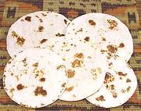

(click to enlarge) |
Chapatis
East Africa, Tanzania, Uganda, Kenya - Chapati
|
|
Makes:
Effort:
Sched:
DoAhead: |
6 to 8
**
2 hrs
Yes |
|
In India, Chapatis are made from whole wheat Ata flour, but all my East
African cookbooks call for using white all-purpose flour.
|
|
Here in North America, where there is usually only one person doing the
cooking, and after work at that, making Chapatis from scratch is simply
not practical. Fortunately, here in Southern California, we can buy
them at the store - sold as "Wheat Tortillas". The photo examples (two
sizes) have simply been heated on a hot comal - a Mexican rimless steel
plate, similar to an Indian Tava, but without any curvature. Unthinkable
a few decades back, even Indian women now buy Chapatis at the store, made
on the same machines as Whole Wheat Tortillas.
Because Purists always strive to make life more difficult for
themselves, and for others, we include here a simple recipe for
African Chapatis, and some notes on more elaborate versions.
3
1-1/2
3
1-1/4
ar
ar
|
c
t
T
c
|
Flour, all-purp.
Salt
Ghee or Oil (1)
Water, warm
Flour (for kneading)
Ghee or Oil
(for brushing)
|
MAKE - (2 hrs - 1 hr work)
- Place Flour in a large bowl and make a well in the center.
- Pour Salt and Oil in the well. Knead it all
together into a soft sticky dough.
- Heavily flour your board. Place the Dough on it and
start kneading, sprinkling more flour over the Dough a little at
a time until it is elastic, smooth, and soft, but not sticky.
- Divide the dough into 6 to 8 balls as desired. Cover with
plastic and let them rest for about 1 hour to develop the gluten.
- Roll the dough balls out into rounds, a little less than 1/4
inch thick.
- Lightly brush Oil onto a Comal or similar (the Lodge 90G
round cast iron griddle is excellent) and heat it hot, but not to
smoking. Place a round of Dough on the Comal and fry until
browned spots start to appear. Meanwhile, brush the top of the
dough lightly with oil. Turn over and continue to fry until browned
spots start to appear.
- Remove from the pan and set aside, keeping covered to keep warm.
Repeat with the remaining dough balls.
- Serve warm.
|
NOTES:
-
Ghee or Oil:
Ghee is fully clarified
Butter. It must be heated for use, and will have fewer sticking
problems than Oil, but Oil is good enough.
-
Variations:
Some people use half
Water and half Coconut Milk to make a richer Chapati. Others make
layered Chapatis by lightly oiling the round, powdering it with
flour on both sides, then fan folding it into a narrow strip. The
strip is then curled into a spiral ball. The ball is flattened and
rolled out into into a circle again, about 1/4 inch thick. The
circle is then fried like any other Chapati.
- U.S. measure: t=teaspoon,
T=Tablespoon, c=cup, qt=quart, oz=ounce,
#=pound, cl=clove in=inch, ar=as required
tt=to taste
qeg_chapat1 180904 inet var - www.clovegarden.com
©Andrew Grygus - agryg@aaxnet.com - Linking to and
non-commercial use of this page is permitted.